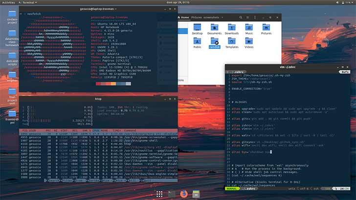

Blog Linux Actualité et Tutoriel

3 façons de vérifier la version du noyau Linux en ligne de commande
Vous vous demandez quelle version du noyau Linux votre système utilise? Voici plusieurs façons de vérifier la version du noyau dans un terminal Linux.
En lire plus →

Comment installer des thèmes dans Ubuntu 18.04 et 16.04
Ce guide du débutant vous montre comment installer des thèmes dans Ubuntu 18.04 et 16.04. Le didacticiel couvre l’installation des thèmes d’icônes, des thèmes GTK et des thèmes GNOME Shell.
En lire plus →Mots-clés
Articles Récents
Pub
Linux est, au sens restreint, le noyau de système d'exploitation Linux, et au sens large, tout système d'exploitation fondé sur le noyau Linux.